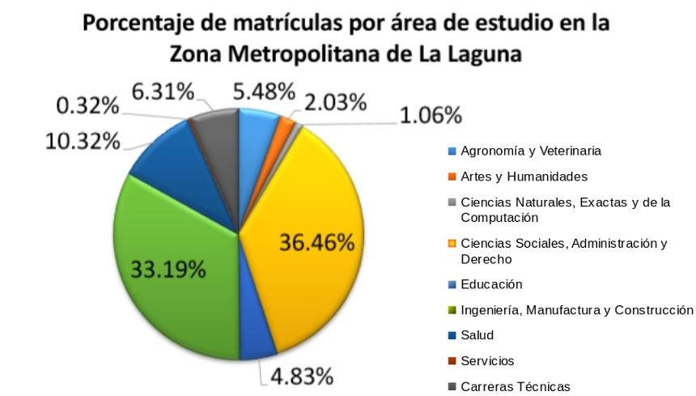
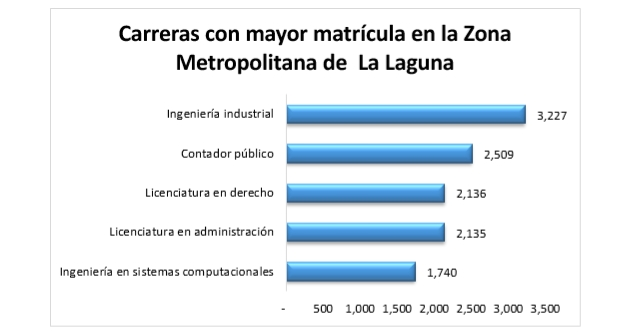

Los cambios tecnológicos, demográficos y sociales han generado disrupción en la dinámica del mercado laboral. Los avances tecnológicos producto de la cuarta revolución industrial, como la automatización, la robótica y la nanotecnología, sumados a los cambios en la pirámide poblacional, la inclusión de las mujeres en la economía y la urbanización, transforman a la industria y afectan su modelo ocupacional.
De acuerdo al reporte: El futuro del empleo del Foro Económico Mundial (World Economic Forum, WEF) realizado en 2016, las ocupaciones y especialidades más demandadas en la mayoría de los países el día de hoy, no existían hace 10 o incluso 5 años. De hecho, se estima que 65% de los actuales estudiantes de primaria se desempeñarán en empleos que todavía no existen. En este contexto, el acceso a la educación superior y la calidad de ésta se vuelven clave en el proceso de adaptación de la fuerza laboral.
En la ZML existen 56 instituciones de educación superior registradas en la Asociación Nacional de Universidades e Instituciones de Educación Superior (ANUIES) que ofrecen 16 carreras técnicas y 113 licenciaturas en las áreas de Educación, Artes y Humanidades; Ciencias Sociales, Administración y Derecho; Ciencias Naturales, Exactas y de la Computación; Ingeniería, Manufactura y Construcción, Agronomía y Veterinaria; Salud y; Servicios.
En datos del Anuario Estadístico de la ANUIES, durante el ciclo escolar 2016-2017 hubo un total de 42,032 matriculados en programas de educación superior y 2,833 en carreras técnicas. Dentro de las licenciaturas, las áreas de estudio más demandadas son las de “Ciencias Sociales, Administración y Derecho” e “Ingeniería, Manufactura y Construcción”, mismas que concentran el 36.46% y 33.19% de las matrículas, respectivamente.

Fuente: Anuario Estadístico de la Asociación Nacional de Universidades e Instituciones de Educación Superior, ciclo escolar 2016-2017.
Las carreras con mayor número de matrículas son Ingeniería Industrial con 3,227 alumnos y Contador Público con 2,509. Las licenciaturas en Derecho y Administración ocupan el 3º. y 4º. lugar con alrededor de 2,100 alumnos cada una.
En cuanto a la Educación Media Superior, las carreras técnicas con mayor demanda son las de Técnico Superior Universitario en Mantenimiento, Técnico Superior Universitario en Procesos Industriales y Técnico Superior Universitario en Mecatrónica.
Actualmente, la oferta de carreras en La Laguna y la distribución de sus alumnos responden a las necesidades inmediatas del sector productivo local y nacional: en La Laguna 72% de la producción bruta total de la Zona Metropolitana es generada por la industria manufacturera, así como una tercera parte de los empleos de la economía; en el Estado de Coahuila, los Sectores Estratégicos definidos por el Plan de Desarrollo Estatal se dedican a la Ingeniería y Tecnología y; en México las políticas implementadas por el gobierno federal favorecen a sectores industriales como el Automotriz y Aeroespacial.
Sin embargo, lo anterior no nos prepara para los retos que estamos por enfrentar. El WEF (World Economic Forum) y otros organismos multilaterales como el Fondo Monetario Internacional (FMI) y la Organización para la Cooperación y el Desarrollo Económico (OCDE) prevén que los impactos generados por los cambios tecnológicos y sociales se vean reflejados en los próximos cinco años. Algunos de los problemas son la polarización entre personas capacitadas y no capacitadas, desigualdad en el ingreso y mayor concentración del poder de mercado, entre otras.
Algunos de los síntomas han comenzado a manifestarse incluso en La Laguna, el alto porcentaje de subocupados con educación superior y las altas tasas de desempleo en jóvenes, detectadas en las últimas encuestas de ocupación y empleo de INEGI, así como la brecha de competencias laborales de 42%, la deficiencia en las competencias blandas en los egresados universitarios y la mala calidad de la vinculación entre la academia y el sector productivo, detectadas por el Centro de Investigación para el Desarrollo, A.C. (CIDAC) hace un par de años, son algunas señales.
No obstante, la implementación de políticas públicas orientadas a la educación y capacitación del personal, pueden mitigar los efectos negativos. Los mismos organismos multilaterales proponen una serie de acciones que ayudan tanto al sector público como al privado a prepararse.
Por ejemplo, el FMI recomienda al sector público aumentar el gasto en educación e implementar un impuesto salarial específico a los distintos niveles de ingreso correspondientes a las capacidades laborales, lo que reduciría el porcentaje de mano de obra no capacitada y disminuiría la brecha salarial entre el personal no capacitado, capacitado y altamente capacitado.
Por otro lado, el WEF recomienda a la academia preparar a los estudiantes en habilidades blandas y multifuncionales que facilitarán su adaptación al volátil mercado laboral. Entre las habilidades más demandadas se encuentran: inteligencia emocional, persuasión, habilidad de impartir conocimientos, análisis y presentación de datos, habilidad para tomar decisiones basadas en información y resolución de problemas complejos.
En conclusión, la amplia oferta de instituciones de educación superior en La Laguna, representará una ventaja competitiva en la medida en la que éstas adapten sus áreas de estudio y programas a las nuevas demandas del entorno y establezcan una vinculación efectiva con las instituciones públicas y privadas de la región.

Fuente: Anuario Estadístico de la Asociación Nacional de Universidades e Instituciones de Educación Superior, ciclo escolar 2016-2017.